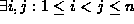

Data Structures and Algorithms
with Object-Oriented Design Patterns in C++
Data Structures and Algorithms
with Object-Oriented Design Patterns in C++
Consider an arbitrary sequence  comprised of of
comprised of of  elements drawn from a some universal set U.
The goal of sorting is to rearrange the elements of S
to produce a new sequence, say S',
in which the elements of S appear in order.
elements drawn from a some universal set U.
The goal of sorting is to rearrange the elements of S
to produce a new sequence, say S',
in which the elements of S appear in order.
But what does it mean for the elements of S' to be in order? We shall assume that there is a relation, <, defined over the universe U. The relation < must be a total order, which is defined as follows:
Definition A total order is a relation, say <, defined on the elements of some universal set U with the following properties:
In order to sort the elements of the sequence S,
we determine the permutation  of the elements of S such that
of the elements of S such that

In practice, we are not interested in the permutation P, per se.
Instead, our objective is to compute the sorted sequence
 in which
in which  for
for  .
.
Sometimes the sequence to be sorted, S, contains duplicates.
I.e.,  such that  .
In general when a sequence that contains duplicates is sorted,
there is no guarantee that the duplicated elements
retain their relative positions.
I.e.,
.
In general when a sequence that contains duplicates is sorted,
there is no guarantee that the duplicated elements
retain their relative positions.
I.e.,  could appear either before or after
could appear either before or after  in the sorted sequence S'.
If duplicates retain their relative positions in the sorted sequence
the sort is said to be stable .
In order for
in the sorted sequence S'.
If duplicates retain their relative positions in the sorted sequence
the sort is said to be stable .
In order for  and
and  to retain their relative order in the
sorted sequence,
we require that
to retain their relative order in the
sorted sequence,
we require that  precedes
precedes  in S'.
Therefore, the sort is stable if
in S'.
Therefore, the sort is stable if  .
.
 Copyright © 1997 by Bruno R. Preiss, P.Eng. All rights reserved.
Copyright © 1997 by Bruno R. Preiss, P.Eng. All rights reserved.